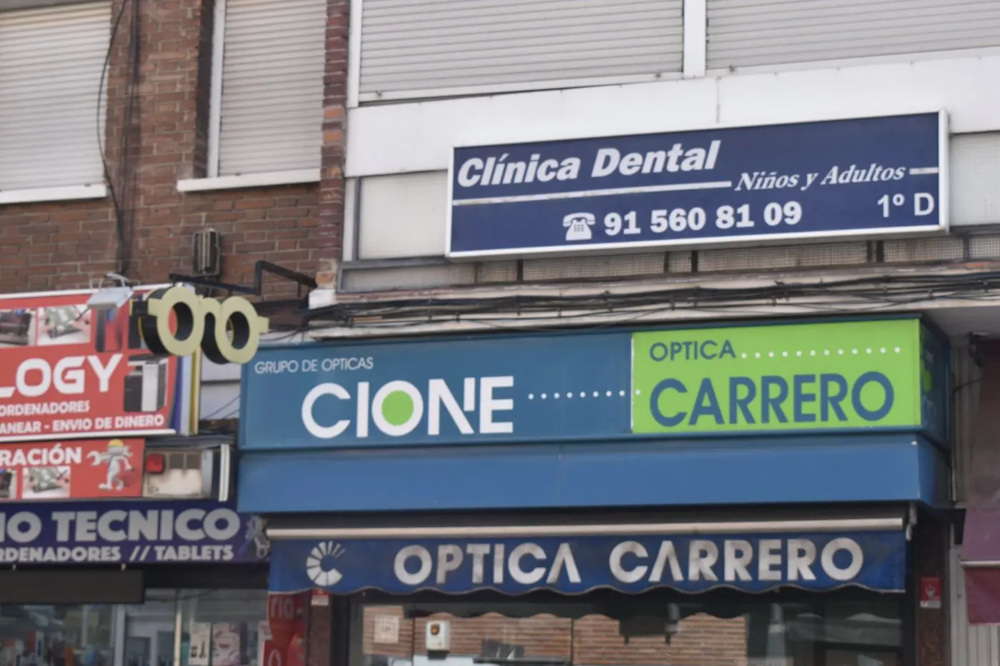

Información local para llegar a Marcos Martínez Clínica Dental desde Metro Oporto, Metro Opañel y diferentes zonas de Carabanchel.
Una clínica dental bien comunicada en Carabanchel.
Marcos Martínez Clínica Dental está situada en Camino Viejo de Leganés, 115, Piso 1ºD, una ubicación cómoda para pacientes de Opañel, Oporto, Vista Alegre, Abrantes y otras zonas de Carabanchel.
Metro y transporte público
La zona cuenta con conexión por Metro Oporto y Opañel, además de varias líneas de EMT cercanas. Para una primera visita recomendamos revisar la ruta antes de acudir.
Qué llevar a la consulta
Si tienes radiografías, informes previos o datos de tratamientos anteriores, puedes traerlos para facilitar la valoración.
Atención con cita previa
Para organizar mejor la agenda, la clínica atiende con cita previa. Puedes llamar al 915 60 81 09 o contactar por WhatsApp.
¿Quieres resolver tu caso en consulta?
Podemos valorar tu boca, resolver dudas y explicarte las opciones de tratamiento de forma personalizada.
Pedir cita